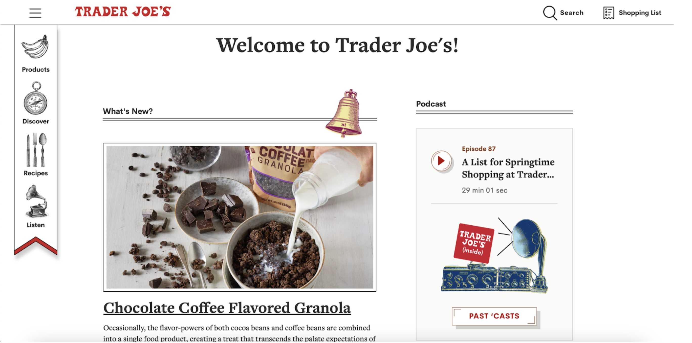
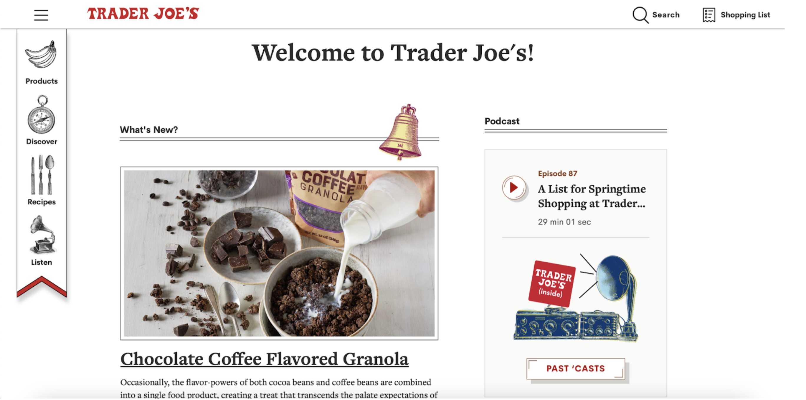

Why Is There Need For Redesign!?
Take a look at the images below or you can also click on the link and see the full original Holm Center website. What comes to mind upon first seeing the layout?
Visit Holm Center's Landing Page 

Below you will find some information describing what I found the design issues to be... click on the boxes to see more!